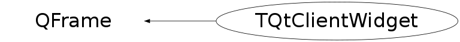

class TQtClientWidget: public QFrame
TQtClientWidget is a QFrame implemantation backing ROOT TGWindow objects It tries to mimic the X11 Widget behaviour, that kind the ROOT Gui relies on heavily.
Function Members (Methods)
public:
protected:
| TQtClientWidget(TQtClientGuard* guard, int* parent = 0, const char* name = 0, int f = 0) | |
| virtual void | paintEvent(QPaintEvent*) |
| void | SetCanvasWidget(TQtWidget* widget) |
private:
| TQtClientWidget(const TQtClientWidget&) | |
| void | operator=(const TQtClientWidget&) |
Data Members
protected:
| EMouseButton | fButton | |
| TQtWidget* | fCanvasWidget | |
| bool | fDeleteNotify | |
| QColor* | fEraseColor | Color to paint widget background with our PainEvent |
| QPixmap* | fErasePixmap | pixmap to paint widget background with our PainEvent |
| QCursor* | fGrabButtonCursor | |
| UInt_t | fGrabButtonMask | modifier button mask for TVirtualX::GrabButton |
| UInt_t | fGrabEventButtonMask | input event mask for TVirtualX::GrabButton |
| UInt_t | fGrabEventPointerMask | input event mask for TVirtualX::GrabPointer |
| QCursor* | fGrabPointerCursor | |
| TQtClientGuard* | fGuard | |
| bool | fIsClosing | |
| TGWindow* | fMyRootWindow | back pointer to the host window object |
| QCursor* | fNormalPointerCursor | |
| Bool_t | fPointerOwner | |
| UInt_t | fSaveSelectInputMask | To save dutinr the grabbing the selectInput |
| UInt_t | fSelectEventMask | input mask for SelectInput |
Class Charts
{kind=link}
{kind=link}
{kind=link}
{kind=link}

Function documentation
void SetButtonEventMask(UInt_t evmask, Cursor_t crsr = 0)
{ fGrabEventButtonMask = evmask; fGrabButtonCursor =(QCursor *) crsr; }void operator=(const TQtClientWidget& )
TQtClientWidget(const TQtClientWidget& )
TQtClientWidget(TQtClientGuard* guard, int* parent = 0, const char* name = 0, int f = 0)
void SetCanvasWidget(TQtWidget* widget)
void paintEvent(QPaintEvent* )
virtual ~TQtClientWidget()
void closeEvent(QCloseEvent* ev)
void setEraseColor(const QColor& color)
void setErasePixmap(const QPixmap& pixmap)
TQtClientWidget * IsKeyGrabbed(const Event_t& ev)
void SetButtonMask(UInt_t modifier = kAnyModifier, EMouseButton button = kAnyButton)
void SelectInput(UInt_t evmask)
Bool_t SetKeyMask(Int_t keycode = 0, UInt_t modifier = kAnyModifier, int insert = kInsert)
void UnSetButtonMask(bool dtor = false)
void UnSetKeyMask(Int_t keycode = 0, UInt_t modifier = kAnyModifier)
void Accelerate()